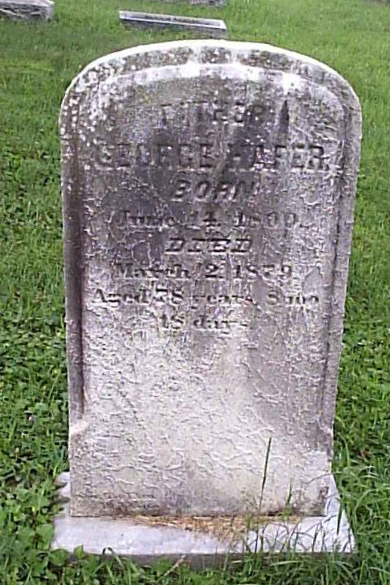
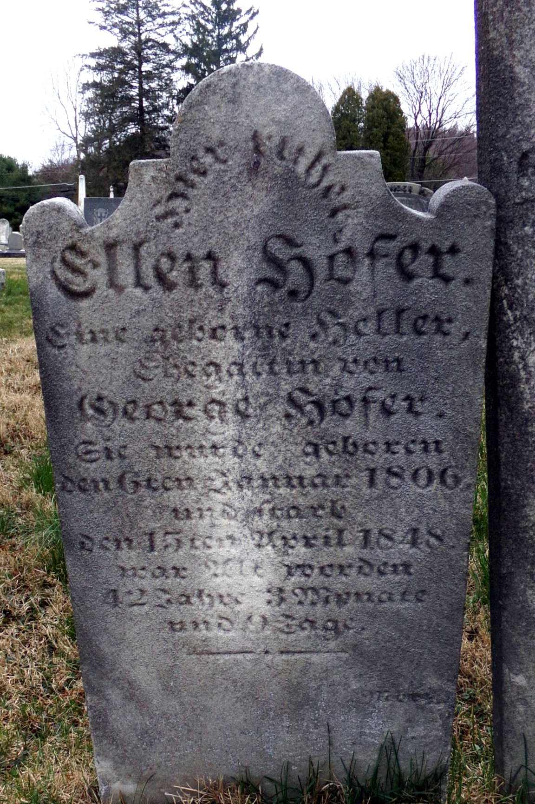
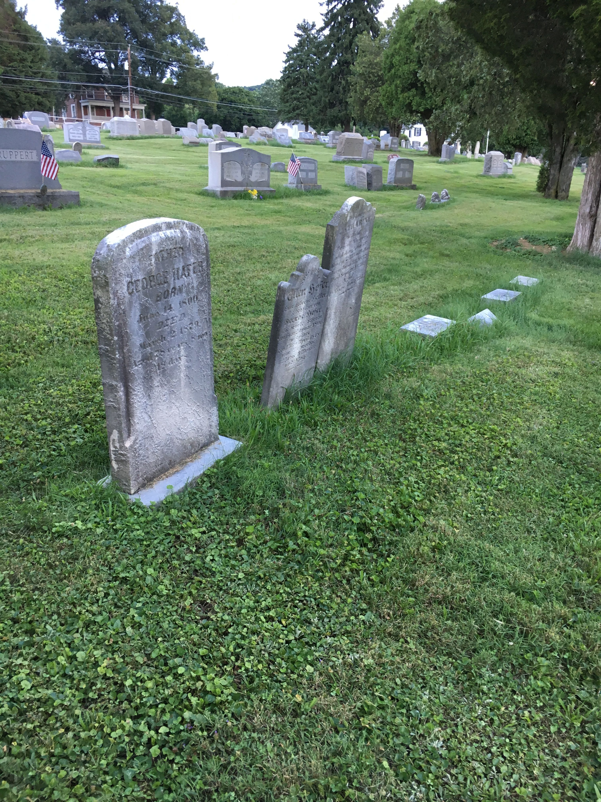

George Klein HAFER
born 14 Jun 1800
died 02 Mar 1879
Ellen "Nellie" HELLER
born 09 Jan 1806
died 15 Apr 1848
(great-great-grandparents of Titus Hartman)
married XX
Phoebe H. HAFER
born 31 Jul 1827
died 10 Jan 1891
William HÖFER
born 10 May 1829
died 25 Aug 1855
Daniel HAFER
born 21 Aug 1832
died 18 Nov 1899
Catharine HAFER
born 21 Jun 1837
died 02 Sep 1856
Amanda H. HAFER
born 1840
died XX
Ellen Louisa HAFER
born 13 Aug 1845
died 06 Sep 1918
George and Ellen are buried together with their daughter Catharine at Schwarzwald Cemetery in Jacksonwald, PA.


